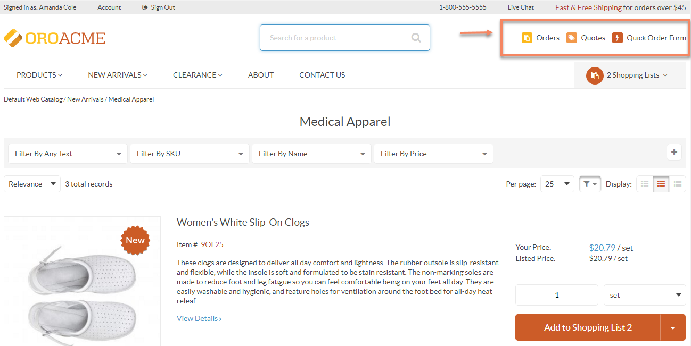
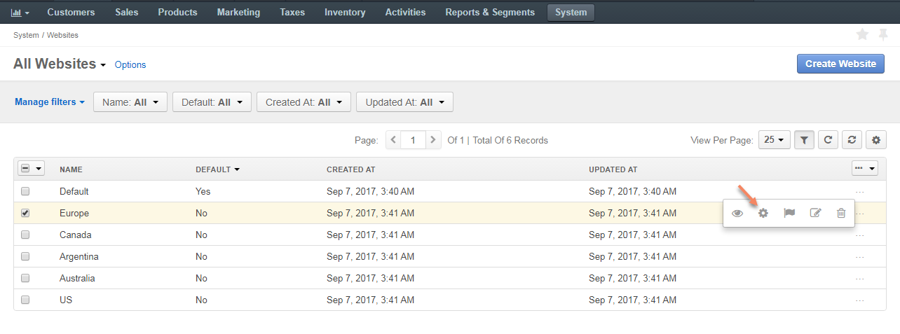
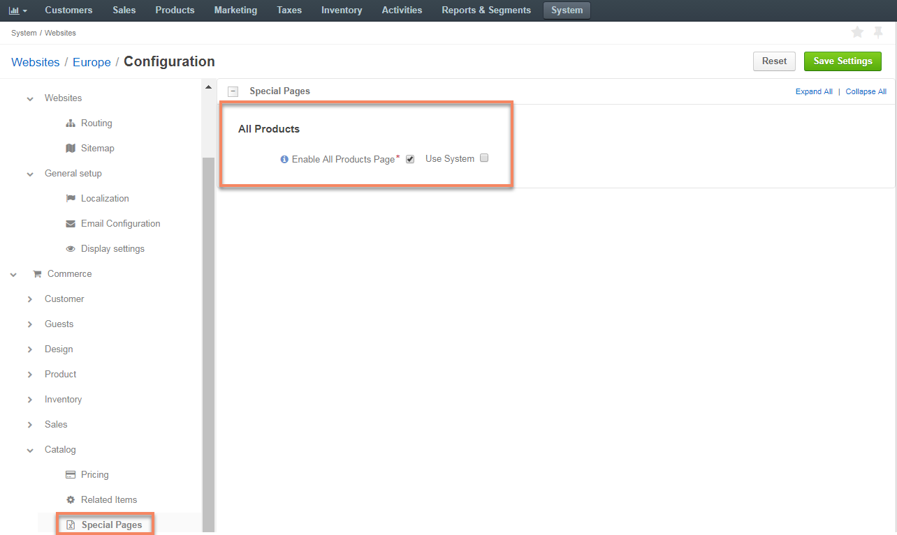
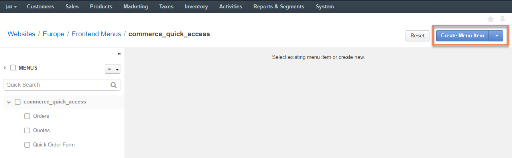

Configure All Products Page¶
In your Oro management console, you can enable and configure All Products page for the OroCommerce storefront. When configured, such page should display all available products from the master catalog grouped by categories.
To configure All Products page:
- Enable All Products Page in system configuration on the required level (globally or per website).
- Add it to the storefront as part of either your web catalog (Marketing > Web Catalog) or a frontend menu (System > Frontend Menus).
Before You Begin: Enable All Products Page¶
Adding All Products page either to the web catalog or frontend menus is only possible when All Products Page is enabled in your Oro application.
The following topics will describe how to:
Note
Please note that it is recommended to enable All Products page exclusively for small catalogs with no more than a few hundred products, otherwise browser performance might be affected.
Add All Products Page to the Web Catalog¶
Once the All Products page has been enabled in the system configuration, you can add it as a part of your web catalog:
- Navigate to Marketing > Web Catalogs in the main menu.
- For the necessary web catalog, hover over the more actions menu to the right and click to start editing the catalog content tree.
In the Content Nodes menu on the left, select the node to which you need to add All Products page by clicking it.
Click Create Content Node on the top right of the page.
Complete the required fields to configure the web catalog node.
In the Content Variants section, make sure to add the All Products as the system page. To do this:
- Click Add System Page.
- From a System Page Route list, select the Oro Catalog Frontend Product Allproducts (All Products page).
Note
See Content Variants topic for more information on using content variants. See System Page topic for more information on this content variant type.
Once all the details have been provided, click Save on the top right of the page.
Sample All Products Page¶
As an illustration, let us add a sample All Products page to the storefront of the Europe website as a standalone page in the Quick Access menu.
For this, first enable All Products page in the system:
Navigate to System > Websites.
For Europe, hover over the more actions menu, and click .
Select Commerce > Catalog > Special Pages in the panel to the left.
In the All Products section, select the Enable All Products Page check box.
Click Save Settings.
Next, add the page to the quick access menu:
Navigate to System > Websites.
Click once on the Europe website to open its page.
On the website page, click Edit Frontend Menu to start editing the configuration.

Click once on the commerce_quick_access menu.

Click Create Menu Item on the top right.
Fill in the required fields:
- Title: All Products
- URL: /catalog/allproducts
- Select an icon from the list
Click Save on the top right to save the changes.
The All Products page should now be available as part of the Quick Access menu in the storefront of the Europe website.
Note
Please note, that the products unassigned to a category will be listed first, followed by those which belong to a category.
Similarly, you can add All Products page to the menus of your choice.